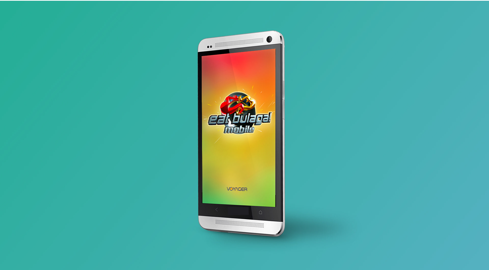
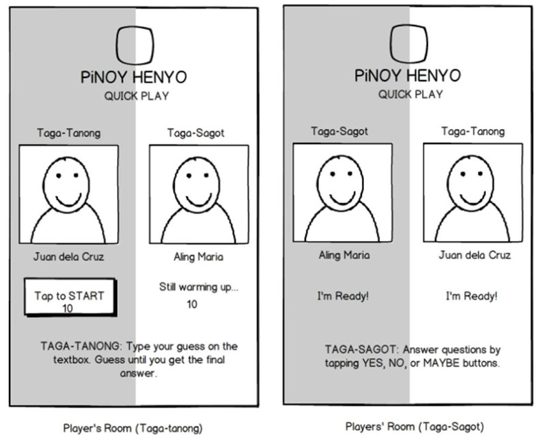
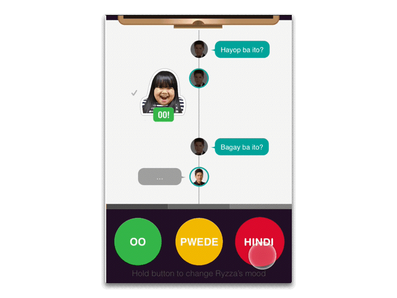

Eat Bulaga! Mobile
Official fan-app and Pinoy Henyo game for the Philippine’s noon-time show, Eat Bulaga!
Introduction
For over 35 years in the air, Eat Bulaga! is now one of the most famous T.V. show in the Philippines and currently has over 11 MILLION followers on Facebook.
For its 35th year anniversary, T.A.P.E., its producer, decided to make a project with Voyager to develop the T.V. show’s official Eat Bulaga! Mobile app as a surprise gift to their fans.
Pinoy Henyo is one of the T.V. show’s segment and is very popular among the Filipinos. It’s a localized version of Charades in the Philippines but with a twist.
...
Case Study
...
I. Identifying the Problem
Rico is an avid fan of Eat Bulaga! especially the show's Pinoy Henyo segment. He follows the T.V. show’s daily episodes and all of its social media accounts to make sure he is up to date to the show’s events.
After hearing about the launch of Eat Bulaga!’s official mobile app, he immediately and excitedly tried it out.
How happy he was to find out that the app included a mobile version of the game! Rico made sure that he loaded-up his mobile data assuming that he will be using video streaming to play the game. To his surprise, the game is to be played only using his phone’s keyboard and is text-based. This meant lower data charges for him but he was worried about its gameplay.
Despite the difference in the gameplay, Rico found the game more accessible and challenging. He can invite his friends from Facebook that are online, and he can even play with random strangers with just a few buttons! The daily,weekly, and monthly leaderboard also challenges him to play harder.
...
II. Challenges and Solutions
1. Integrated social networking sites (SNS) and many more.
Eat Bulaga!’s Facebook, Twitter, Instagram, and Youtube account had to be integrated inside the app beside “Videos” and “Pinoy Henyo” features.

(Android version) Users navigate between the 3 main features using swipe gestures and navigate through different social networking sites using the tabs at the bottom.

(iOS version) Navigation is at the bottom to comply with iOS’ standards.
2. Limitations on the mobile version.
Pinoy Henyo is meant to be played face-to-face. To develop its mobile version, we had to consider the engineering limitations and probable abuses if we will implement the game with video conferencing.
Actual Pinoy Henyo game at Eat Bulaga!’s studio.
Waiting room for both players before the game starts.
3. A different gameplay. Text-based and not face-to-face.
In a face-to-face setup, players can easily communicate their feelings of happiness (if they are close to the answer) or frustration (if the guesser is too far) using their voice. This gives indirect clue to their team-mate that could help them win the game. However, it’s very hard to communicate the intensity of a word delivered only via text.

Wireframes of the text-based gameplay of the app.
At the beginning of the game, it’s a must that the guesser should first narrow down the possible answers by asking categories like Animal, Human, Place, etc. So to save time from typing, the guesser is prompted to choose a category first once the game started and he can easily go back to the “Category” screen by tapping the quick-access button for it.

Wireframes of the text-based gameplay of the app.
The team decided to use one of the T.V. host’s face with 3 levels of progressive intensity of emotions for each of the possible answers “Yes”, “No”, and “Maybe”. Answer’s intensity increases depending how long the user presses the the buttons.
Wireframes of the text-based gameplay of the app.
...
III. Remarks
The android version of the app was successfully launched during the T.V. show’s 35th anniversary special episode.
It reached 500,000 - 1,000,000 downloads and was rated 4.5 stars by 22,339 users on Google Play!
As of today, the app is however no longer available on Google Play. But some of its Google Play statistics can be viewed on sensortower.com.
Official launch of Eat Bulaga! Mobile on the national television!
...
IV. What Could Have Been Done Better?
During its peak on Google play. I gathered feedback from users on Google Play and found out that one of the top problems is the use of foul language and user trolling.
We could have implemented user moderation features like automatic filters for foul language and a report abusive user feature from the very beginning.
...
BACKGROUND
Company:
Voyager Innovations Inc.
Client:
T.A.P.E. Inc.Project duration:
May 2014 - Jan 2015 (8 months)Role:
UX/UI designerResponsibility:
- Designed the over-all UX and UI for both iOS and Android app.
- Teamed-up with another designer for UI of the in-app game.
- Collaborated directly with the client and product owner to ensure that the UI meets the business requirements.
- Collaborated directly with the product engineering team to provide all necessary assets and style guide.
For it is God who works in me,
both to will and to work for his good pleasure. - Phi 2:13